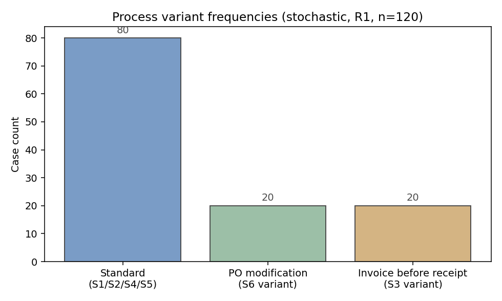
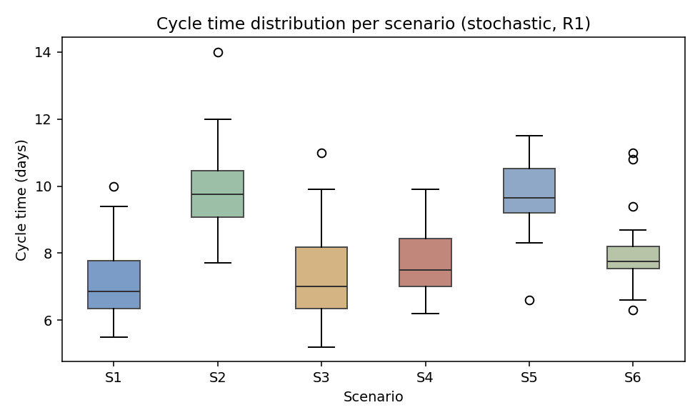
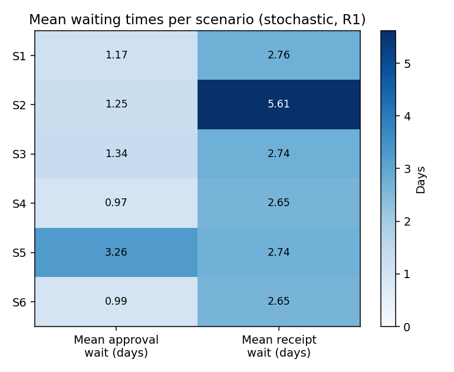
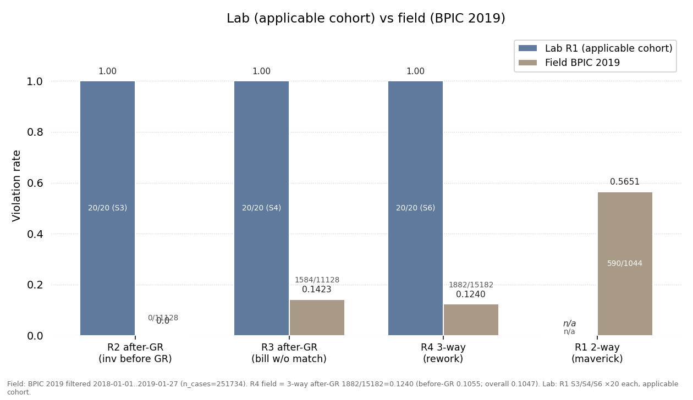

1 · Overview and key indicators
Normative purchase requisition to payment compared against controlled Odoo execution. Select a round; all charts and indicators below follow the selection. Tabular samples and exported figures remain fixed for audit.
Cases
— Loading round data from data.json- Normative path
- Requisition → Approval → Purchase order → Goods receipt → Vendor bill (3-way match) → Payment, with R1–R5 guarding sequence, approval, matching, posting order, and payment release.
- Round 1 finding
- 60 of 120 cases deviate (variants V2 swap, V3 rework); violations concentrate in R2–R4. Mean cycle 7.67 days.
- Round 2 result
- After redesign, 60 of 60 cases conform (V1 + authorised V3R rework with re-approval); violations R1–R5 = 0. Mean cycle 7.33 days. Lab only; field transfer is untested (H8 open).
2 · Discovery: variants in the log
Process discovery on each round. R1 yields three variants; R2 collapses to the normative variant plus one explicitly authorised rework loop.

3 · Conformance: rules, cases, alignments
Rule checking (R1–R5) and token-based alignment. Use the filter to audit individual cases; fitness and deviations are reported per case in the alignment sample.
| case_id | scenario | variant | violations | cycle |
|---|---|---|---|---|
| Loading log sample from data.json… | ||||
| case | fitness | deviations |
|---|---|---|
| C021 | 1.00 | none — synchronous moves only |
| C061 | 0.83 | R2: goods receipt before purchase order (move-on-log) |
| C081 | 0.79 | R3: bill posted without 3-way match; R4: payment before posting |
| C101 | 0.86 | R4: rework loop without re-approval (move-on-model: approval) |
4 · Performance: cycle time and waiting
Mean cycle time by scenario with exported distributional and waiting-time views. Deviating scenarios (notably S2) carry the delay; the redesign holds cycle time flat.


5 · Robustness: sensitivity and uncertainty
Bootstrap and permutation checks on the R1–R2 conformance gain and on the cycle-time difference, guarding against over-claiming from a single split.
Statistical summary
Conformance gain R2 − R1: +0.50, 95% bootstrap CI [0.38, 0.61]; permutation p-value < 0.001.
Cycle-time difference (R2 − R1): −0.33 days; Mann-Whitney U p-value = 0.42 (n.s.); Cliff's delta effect = −0.07 (negligible).
Interpretation: the conformance improvement is large and robust; there is no evidence of a performance penalty. Full tables in docs/05.
6 · From synthetic stand-in to real ERP data
Generators are row-for-row compatible with an Odoo export. Replace the CSV, keep column names, and re-run the same pm4py notebook.
pm4py replication path
Expected columns: case_id, activity, timestamp, scenario. Discovery and conformance use stock pm4py calls; no custom miner.
import pm4py
log = pm4py.read_csv("data/event-log-r1.csv")
net, im, fm = pm4py.discover_petri_net_inductive(log)
fitness = pm4py.fitness_token_based_replay(log, net, im, fm)
prec = pm4py.precision_token_based_replay(log, net, im, fm)Mapping note: Odoo purchase.order, stock.picking, account.move, account.payment map to P2P activities in src/mapping_odoo.py. Synthetic timestamps preserve the same weekday and lead-time structure so figures regenerate unchanged.

What contradicted lab expectations: S3 pattern absent in field after-GR stratum (R2 0/11128) — vendor-early billing does not surface as recorded-early (recording-gate absorption); R3 zero-tolerance refuted as a general norm (field after-GR 1584/11128 = 0.1423) — lab tol-0 is a lab norm only. Lab R2 −100% fix does not imply field relevance where the pattern is absent.
7 · Normative BPMN model
Normative P2P v2: requisition, approval gateway, order, receipt, 3-way-matched bill, payment. Source of truth for rules R1–R5 and for alignment.
bpmn-placeholder.png was never generated — see dead src/make_figures.py reference). Machine-readable source: docs/bpmn/v2.bpmn.8 · Method
Design: normative modelling → Odoo configuration → controlled execution (scenarios S1–S6) → event-log extraction → discovery (inductive miner), conformance (token replay, R1–R5 checks), performance (cycle, waiting) → causal analysis → minimal redesign → re-execution (S3R/S4R/S6R) → R1/R2 comparison with robustness checks.
Controls: fixed catalogues, fixed approval thresholds, deterministic clocks per scenario; each deviation is injected by exactly one scenario so causes are attributable. All scripts and seeds are versioned; figures under figures/ are regenerated, never hand-edited.
9 · Threats to validity
Construct. Rules R1–R5 operationalise the BPMN text; ambiguous gateways were resolved in docs/01 and reviewed against the .bpmn XML.
Internal. Single-tenant Odoo Community; no concurrent-user contention. Randomisation is by seeded generator, not by live randomisation.
External. Synthetic stand-in data with Odoo-compatible schema; real-export validation is pending and the mapping is documented above. Single P2P domain — generalisation to other processes is not claimed.
10 · Living system: runs over time
Accumulating record of experiment runs. Violation rate is tracked across runs; the table below lists one row per run.
| run_id | era | cases | viol_rate | mean_cycle |
|---|---|---|---|---|
| No runs recorded yet — new runs will appear here. | ||||
New runs append via src/run_manager.py; BPIC sample: data/bpic_sample.csv (see docs/07).
11 · Hypotheses: lab vs field
Pre-registered hypotheses with predicted signatures and lab vs field rates. Statuses: supported, nuanced, open. H8 (lab 60/60 → 0/60 redesign transfer to field) is open and untested — lab result only, never a field claim.
| hypo | rule | lab | field | status |
|---|---|---|---|---|
| No hypotheses available. | ||||